其他
随便一帧像手绘：战双模型的发、眼和侧面
这条不是捏人教程，也没有 VRoid 界面。它拿战双成图（字幕写成 PGR）对照 Blender 里的模型，讲截图为什么会像插画。字幕称角色为 Leia，大纲里写着莱娅·祈星。下面只记画面和字幕指出的造型、配色、光、线和头发。
随便一帧就已经像手绘
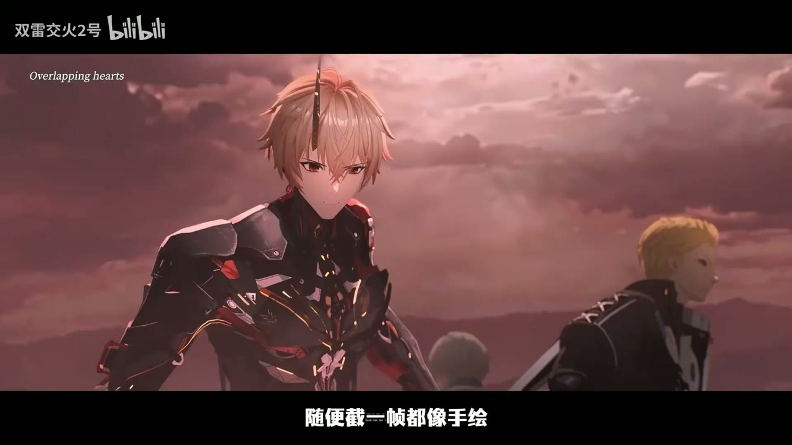
开场用别的角色把话说完：顶尖模型把立体感和插画工艺叠在一起，「战力膨胀」的标志就是平时只在绘画里出现的细节。这一帧就是被拿来当例子的成图。后面才切到莱娅，专门拆头发、眼睛和侧面。
头发分成大股、中股、小股
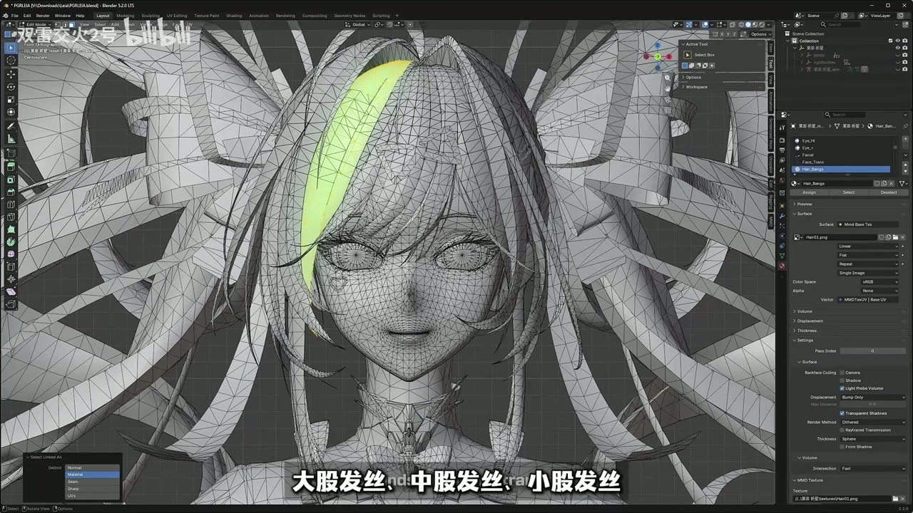
字幕先回忆以前：一块头发网格可能只有十来个三角面，当时也就够用了。现在成套留着大股、中股、小股。这一帧用颜色标出其中一块大面，说明「完整的一整套」首先是几层发片，不是把每根丝都建出来。
极细的发丝只在特写里补全
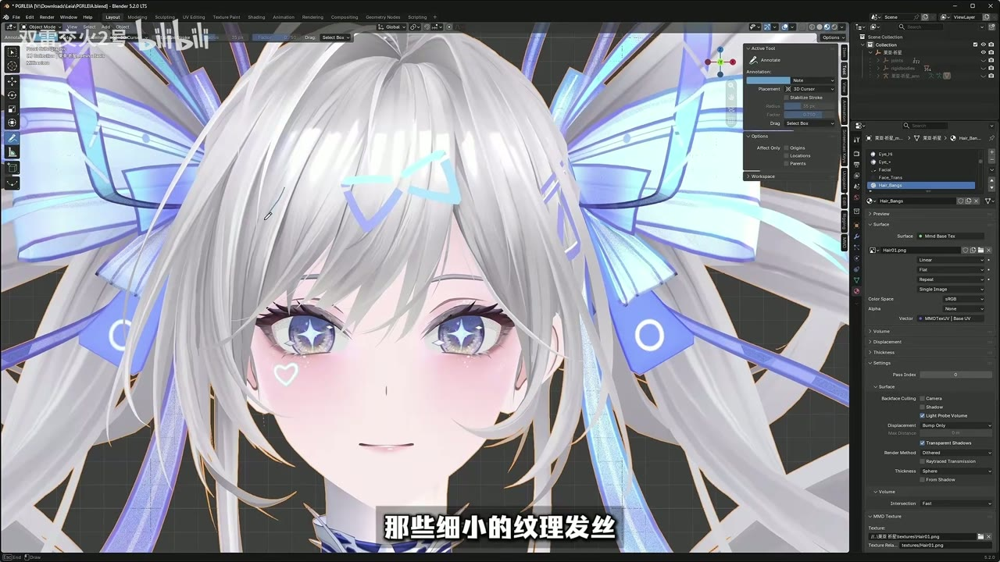
细丝上面还有一层通常只留给过场的极细发。字幕说这种层级平时不必铺满，除非故意做特写，把纹理发丝和模型上的小发丝一起露出来，插画感才完整。莱娅有很多特写镜头就是在用这一点，双马尾也因此能当海报。
着色要能看出纤维走向
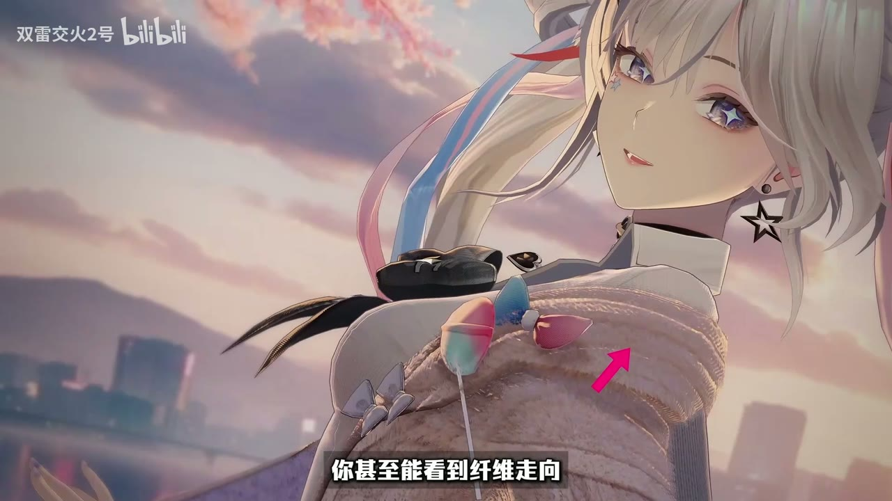
前一句字幕说的是毛发着色器，箭头落在毛衣上。这一帧把「纤维走向」说死在布料上：毛线一圈圈绕过去，旁边还有蝴蝶结和珠子。接着字幕说这种触感，加上每个镜头都好看，才是插画级模型和普通可复用模型的差别。
整组睫毛又锐又细
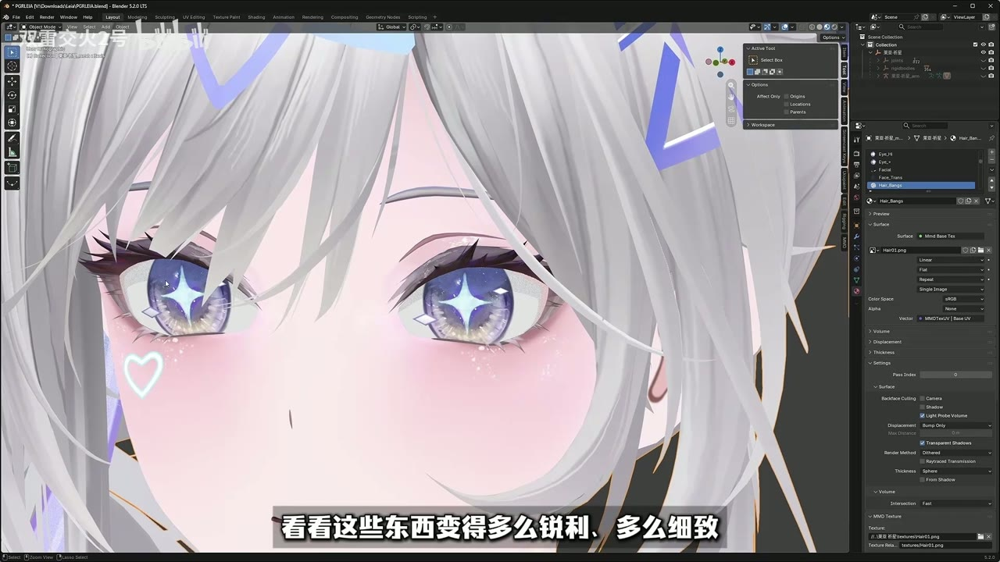
字幕把睫毛的变化说成一条线：以前一块扁平的睫毛面片、没有突出的睫毛就算完成，后来加上两三根上睫毛，现在是整组都建出来。下睫毛趋势上更浅，上睫毛通常更深。再往后的字幕说，深色留在根部附近，末端变粗，再接到浅色，而不是一条颜色从眼睑中间穿过去。那几句是字幕，这一张静帧主要看整组睫毛有多尖。
腮红和眼影是碎点，不是一块红
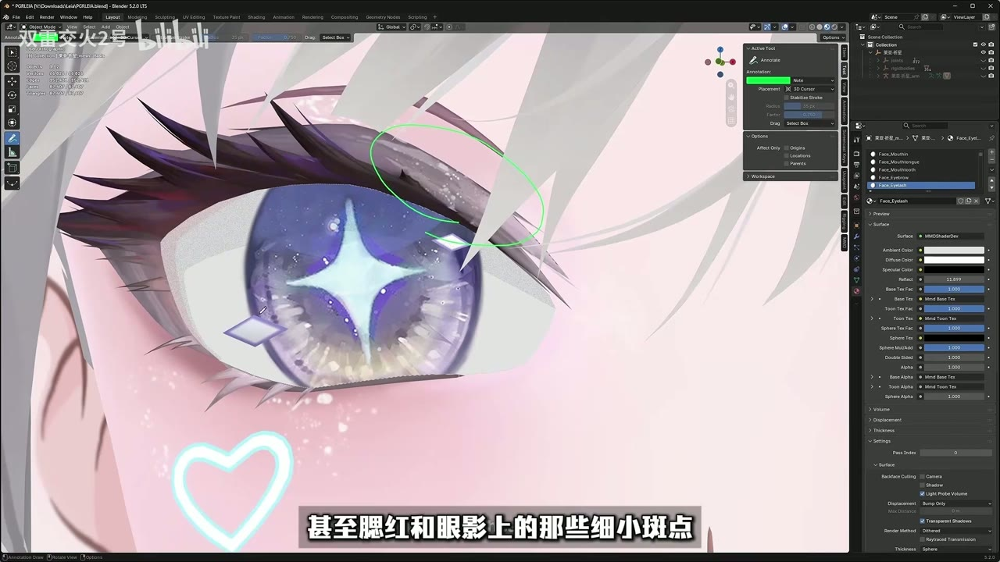
战双为战斗省面，但字幕说头发和脸不偷工。睫毛、虹膜之外，腮红和眼影上的小斑点做出闪粉，插画的手工感就来自这里。这一帧把该看的位置圈出来了，不是整片腮红均匀铺开。
虹膜像一块画，眼下单独放爱心
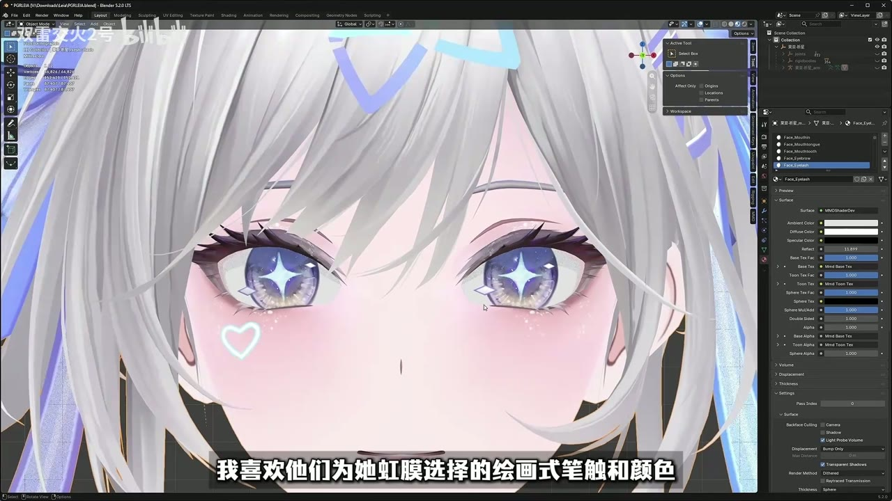
字幕说眼睛是整个模型里最像插画的部分。爱心是右眼下方的小贴纸，前后字幕还说它其实是单独一层，所以会凸出来。这一帧字幕落在虹膜上：颜色不是一个均匀的圆，星形高光压在有变化的虹膜上面。
瞳孔前面还有一层会发光的面
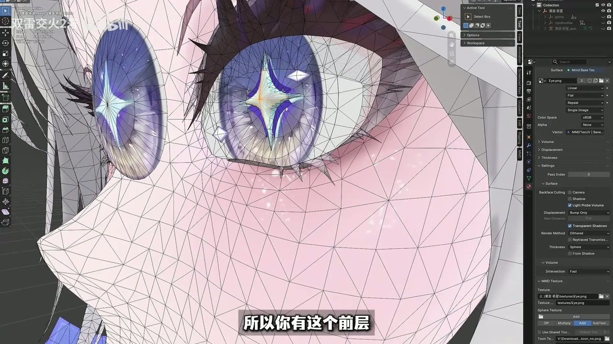
字幕说眼睛细节是分层的，中间瞳孔那一块会凸出来，使命之类的光从这一层透出来。脸的大网格继续铺到鼻子，高光不靠在皮肤上画一个白点。前后字幕还提到表情和眨眼会把脸上的功夫用满，包括爱心眼。
侧面几乎贴在一个平面上
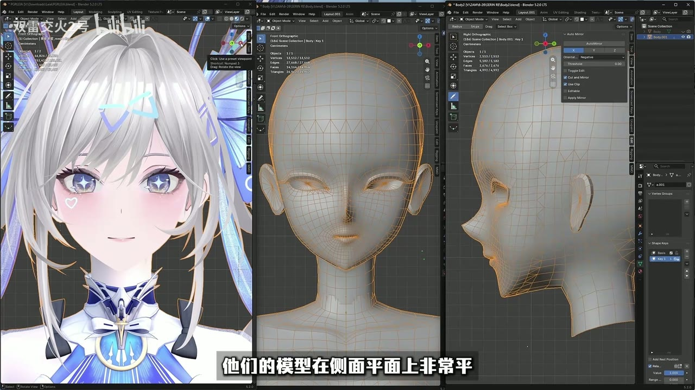
中间和右边不是左边那份莱娅文件，窗口标题是另一份头部。侧视比真人平，鼻子和嘴唇还是向前的，并没有贴成一条竖线。字幕说原模型侧面非常平，是因为优先保证正视图；这个更平的面让一定角度里的脸都更可爱。前后字幕还说，这颗头本来给更严肃的角色，眼睛在垂直方向上要加大；鼻子和鼻孔得往上移一点，才不会又尖又往前突出。那是讲解者的修改，不是视频里的菜单操作。
腿用磨砂和蕾丝分出层次
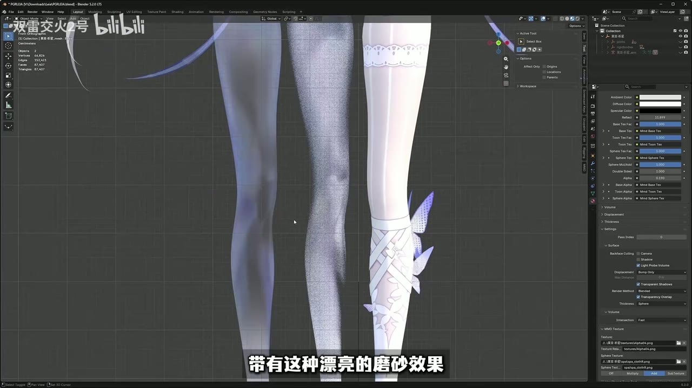
字幕说如果没往下看腿，会错过一件特别的事：膝盖、股四头肌和小腿的结构还在，同时腿带半透明。这一帧把材质并排打开，磨砂是一层颗粒，蕾丝绑带是叠上去的另一层，不是把皮肤涂花。前后字幕还说裙摆和袖子也是双层，为的是绑定和动画时不穿插；减面的时候他们仍把设计和愿景放在效率前面。
游戏镜头里的光留在布料上
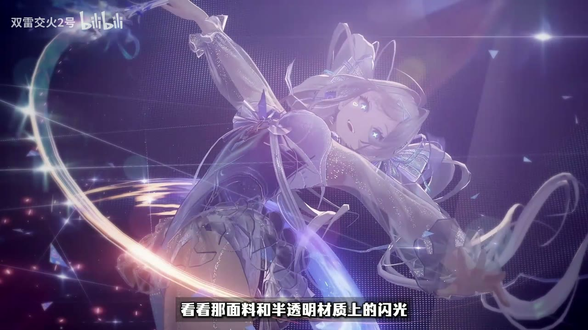
模型视口里的半透明，到游戏镜头里要还能分开：袖子是纱，上面有自己的闪光，手臂轮廓还在。字幕让人看的是面料和半透明材质上的光，不是整张图的光晕。头发和裙摆在这一帧里也是分开的丝带，没有糊成一团。
腿大约占全身的三分之二
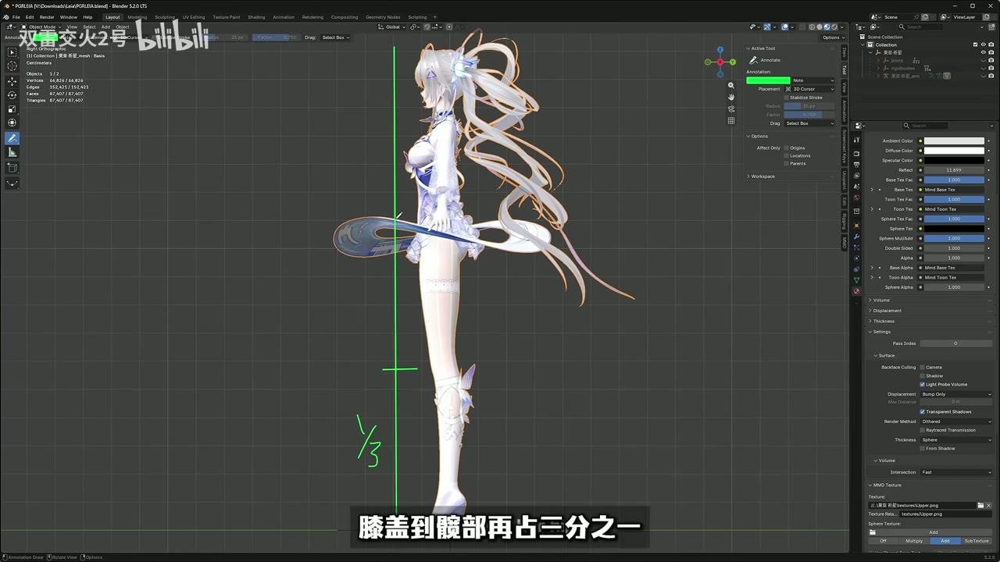
字幕把全身分成三段：到膝盖三分之一，膝盖到髋部再三分之一，头和躯干是最后三分之一，所以腿大约占全身三分之二。这一帧只画出其中一段。接着说这种比例做大幅度战斗动作很难配，但游戏里做到了。视口角落能看到大约六万六千个顶点；更早的字幕说这个模型大约 67,000 个顶点，并说其实还不算太糟。
双马尾不是两束，是飘开的丝带
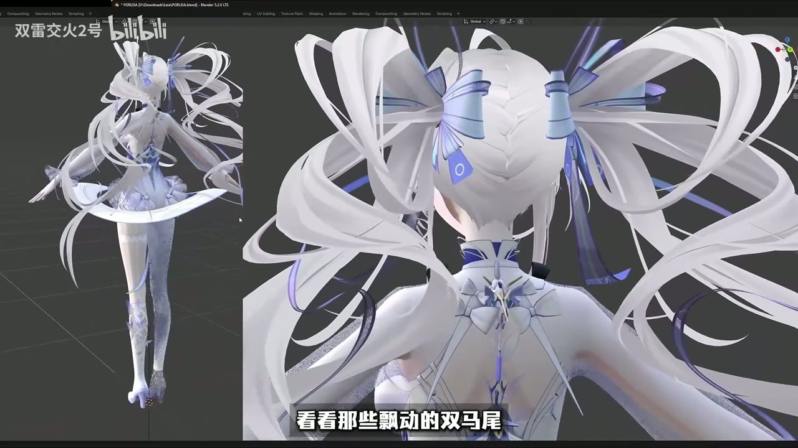
字幕接着说这甚至不是标准双马尾，更像丝带，混乱程度刚刚好。远看是双马尾的轮廓，近看是很多分开的带，中间留出发饰和后背的结构。涂装模型那一段字幕还指到小挂件、毛衣蕾丝和创口贴，说那不只是换皮；这一帧只把头发的造型说清楚。
对照做模型时能用的
下面只是从这些画面能直接搬过来的视觉判断，不是视频里的步骤。
头发先有大片、中片、小缕。极细的丝留给特写，远景不必铺满。布料如果要像这一帧的毛衣，纹路得能顺着一个方向看过去。
眼睛当成一小块画：虹膜有深浅，高光用十字星，不要只留一个圆点。眼影和腮红用碎点。眼下的爱心是单独一小块，不和腮红糊在一起。睫毛上排更完整、颜色更深，下排更浅；字幕说深色在根部，末端变粗再接到浅色，不要一条颜色从中间穿过去。
正脸眼睛可以大，侧面尽量平，鼻子不要又尖又往前拱。字幕说他们优先正视图，斜一点看仍然可爱。比例上，腿大约占全身三分之二，头加躯干只是余下的一段。半透明和磨砂要能分成层，游戏镜头里的闪光留在纱和布上，不要把整个人照成一块白。